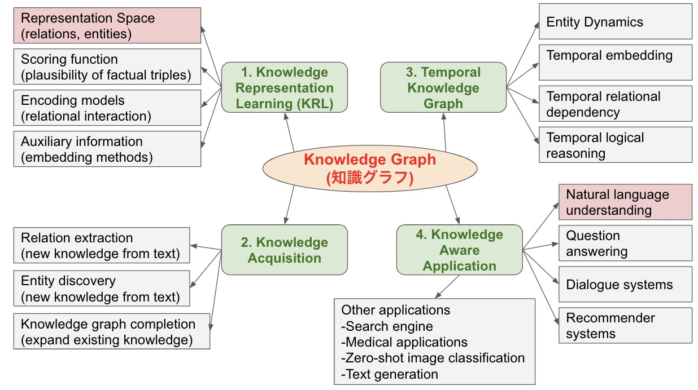

Knowledge Graph(KnoGra)
ナレッジをグラフ図の形式で残す、方向性の策定とかツールの案
残し方
活用の仕方
Reference
知識グラフの紹介：CausalNexで因果推論を試してみたい:
割と今までやっていたこととも関わりが深い。以下の図は参考になりそう。
IoT時代に求められる大量データからの洞察の発見～ナレッジグラフの能力とは:
実装例が、センサーかつ異常の検知であり、観測をナレッジとして残しておいて、それを利用した提案などを行うものなので、異常検知としてやろうとしていることに近い。ヒントになりそう。ナレッジグラフ推論チャレンジ:
推理小説の犯人を当てるために、知識グラフを利用した推論を行うAIを作る企画。過去作品の戦略などは参考になりそう。ナレッジマネジメント研修:
もっと一般的な話として、ナレッジを残すための研修。データ解析的なこととは直接的に関係はないと思われる。